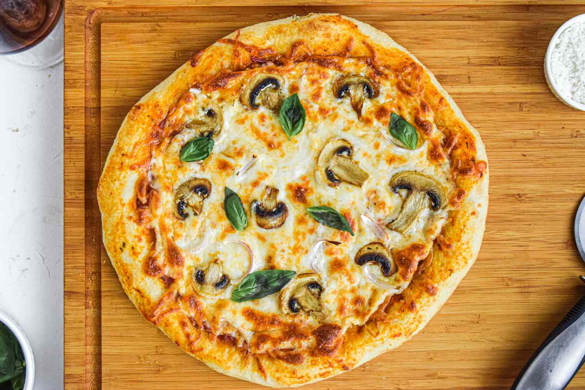

Pizza is a globally beloved culinary masterpiece that perfectly balances simple ingredients to create a symphony of flavors. Originating in Naples, Italy, as a humble flatbread for the working class, it has evolved into a versatile canvas for gastronomic creativity across the world. A traditional pizza relies on a golden, oven-baked crust that is crisp on the outside yet chewy on the inside, which is then layered with a vibrant, savory tomato sauce and melted, gooey mozzarella cheese. From the classic simplicity of a Margherita topped with fresh basil to adventurous modern variations featuring diverse meats, vegetables, and regional spices, pizza transcends cultural boundaries. Its unique ability to be customized to any preference makes it not just a comforting meal, but a universal symbol of shared dining and celebration. Here is a recipe to make your own delicious pizza at home!

See more about the original recipe here